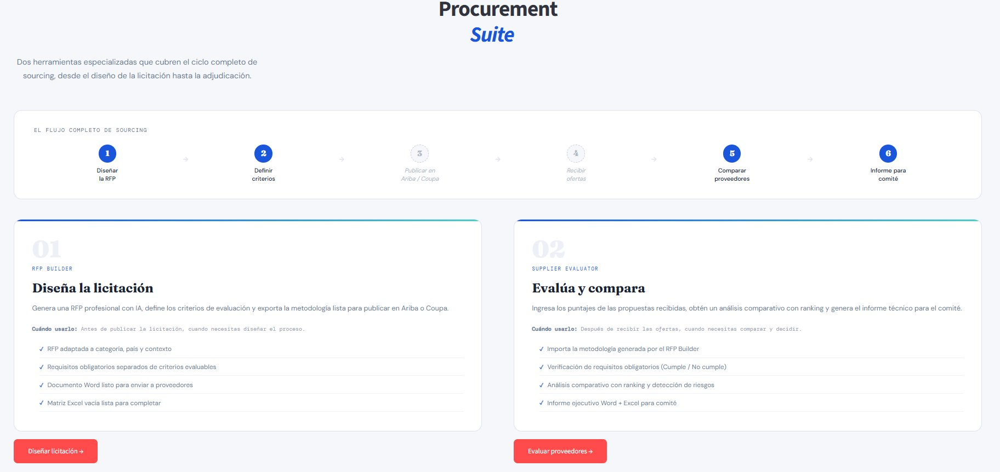

Dos etapas críticas, sin herramientas digitales
En la mayoría de las áreas de compras, el proceso de licitación se gestiona con documentos Word, hojas Excel sin fórmulas y correos. Un comprador que necesita generar una RFP parte de una hoja en blanco. Y cuando recibe las propuestas, construye manualmente la matriz de evaluación, calcula los puntajes y redacta el informe para el comité.
Cada proceso implica entre 4 y 8 horas de trabajo administrativo repetitivo. Multiplica eso por 10 a 30 licitaciones al año y tienes semanas enteras de tiempo profesional invertido en formatos, no en decisiones.
Ariba / Coupa
ofertas
Los pasos 3 y 4 ocurren en plataformas externas como SAP Ariba o Coupa. La Procurement Suite cubre los pasos 1, 2, 5 y 6: exactamente donde el trabajo manual era mayor.
Dos módulos, un solo flujo
- RFP adaptada a 11 categorías de compra
- Requisitos obligatorios separados de criterios evaluables
- Documento Word listo para enviar a proveedores
- Matriz Excel vacía con fórmulas, lista para Ariba o Coupa
- Límite de 3 generaciones por sesión (demo)
- Importación directa desde el Excel del RFP Builder
- Descalificación automática por requisitos eliminatorios
- Dashboard con jerarquía visual: 🥇🥈🥉
- Detección automática de riesgos por puntaje y peso
- Sugerencia BAFO cuando la diferencia es menor a 8 puntos
- Informe ejecutivo Word + Excel para comité
La herramienta en acción
